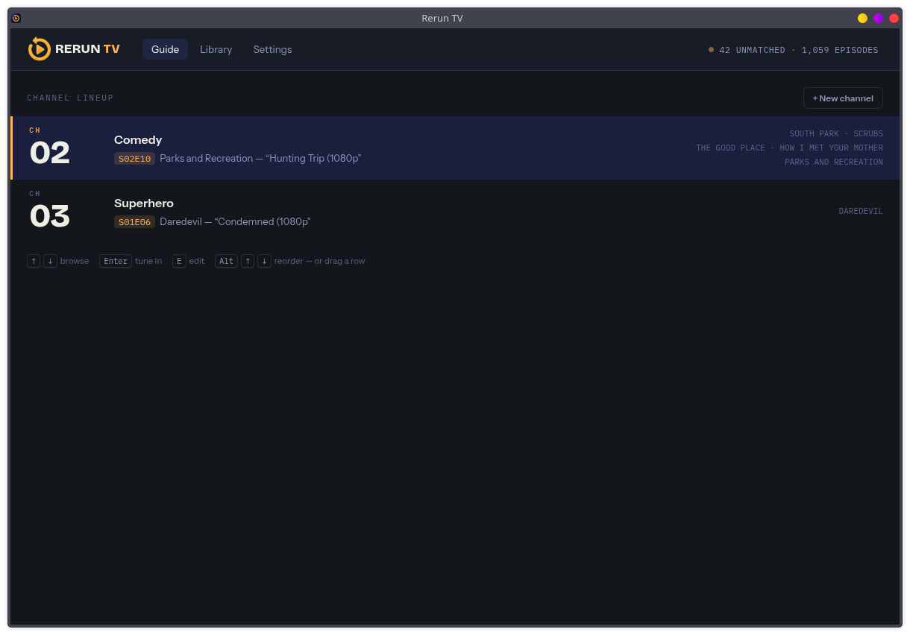
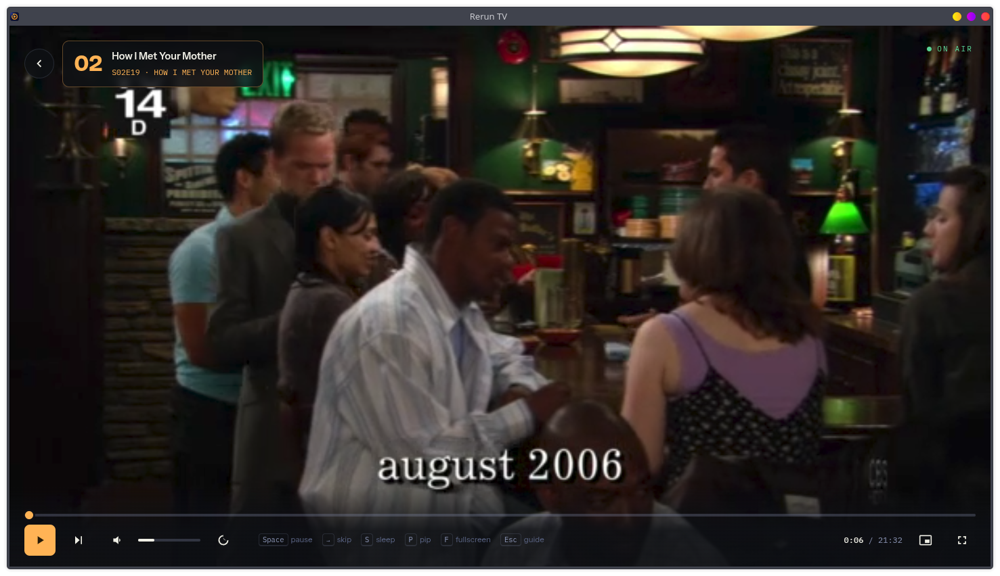

— lean-back TV from your own library —
Stop picking. Start watching.
Rerun TV turns the shows on your disk into channels. Group them into a lineup, tune in, and the channel decides what's on — episode after episode, all night if you let it.

Scan
Point it at any folder of shows. Filenames are parsed, every file is probed once, and anything unreadable waits in a queue instead of disappearing.
Schedule
Shows air in order or on shuffle, down to individual seasons. Multipart stories play start-to-finish, and are exactly as likely to air as a single episode.
Play
Tuning in is instant — the playback path is decided at scan time — and the next episode is buffered before this one ends, so handoffs cut rather than pause.
Sleep
Press S for a dial from off to five hours. When it expires the episode — or the whole arc — plays to its end, and only then does the channel sign off to black.
On air
A player that behaves like a channel
The banner flashes on every handoff, the next episode starts on its own, and picture-in-picture lets the channel follow you to another workspace. Everything answers to the keyboard.
